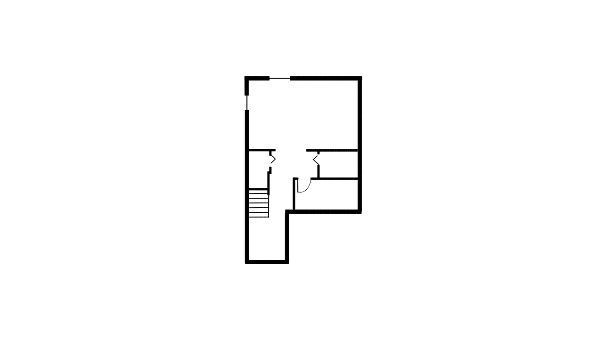
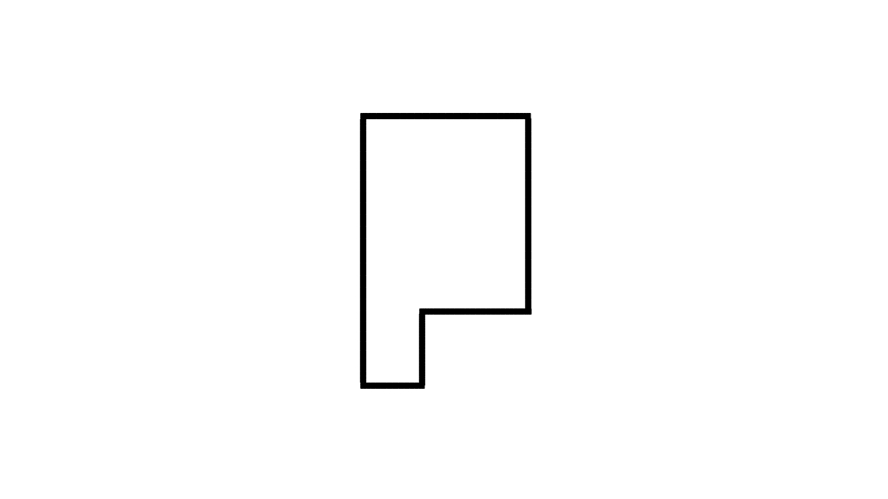
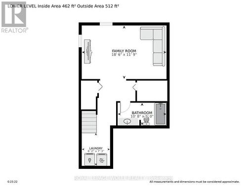

PLOT GENERATION USING GENERATIVE AI (GAN)
AL&ML MINI PROJECT 2023
Anna University
College Of Engineering Guindy
Abstract
This mini project proposes a novel idea using the GENERATIVE
AI (GAN) in architectrue. The goal of this mini project is to generate a
architectral design for a given plot area. In this project there are two
GANs involved one is the GAN which will help us to clean the images i.e.
the raw datas which were collected for the training of the plot generation
GAN.
Method
1-Problem Statement
In these days architectrues for the houses in the North American and
Europe not are basically based on Vasthu
2-GAN Description
1. Cleaning GAN
This project consisits of two GANs one is for cleaning the architectrue
images to train the GAN which will produce the images i.e. the architectrue.
Figure 2
Figure 3
Figure 1
Images description :
- The first image is the input for this cleaning GAN.
-
The second figure is the layout generated for the original plot image.
- The third image is the outline image for the original plot image.
2. Plot generation GAN
The second GAN is for generating the plot for the given area. Input will be
like 500 sq.ft and the output will be the images generated like the figures
below: